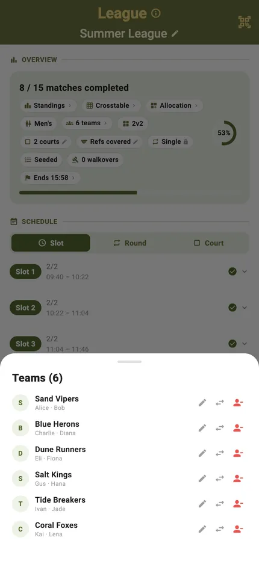
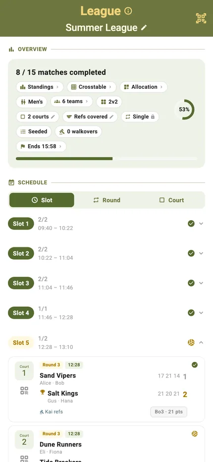
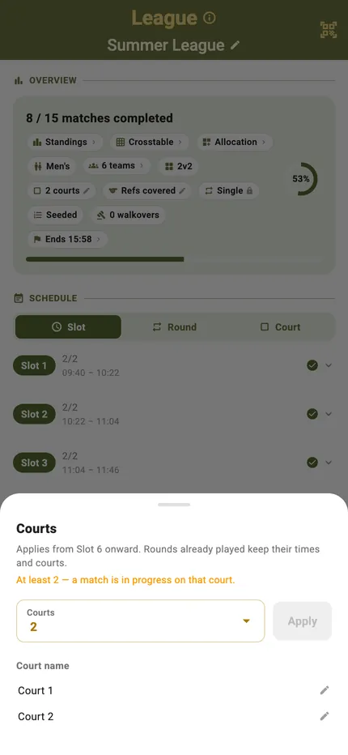
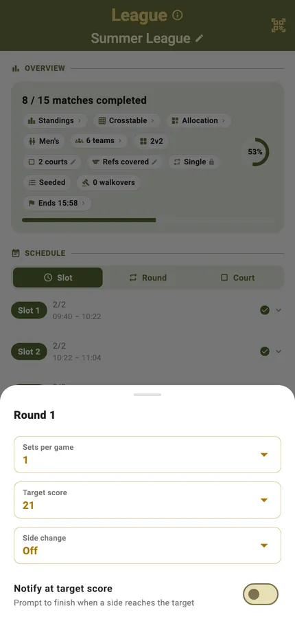
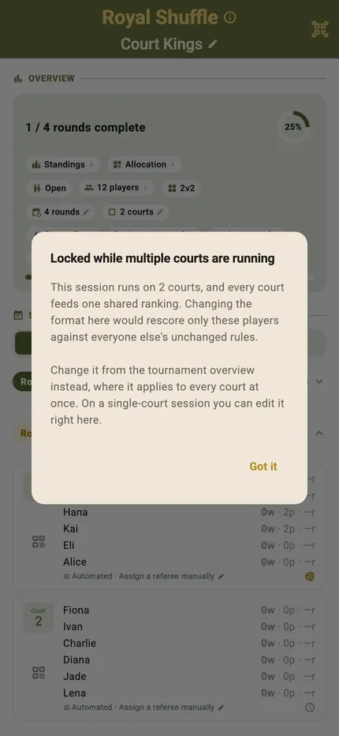
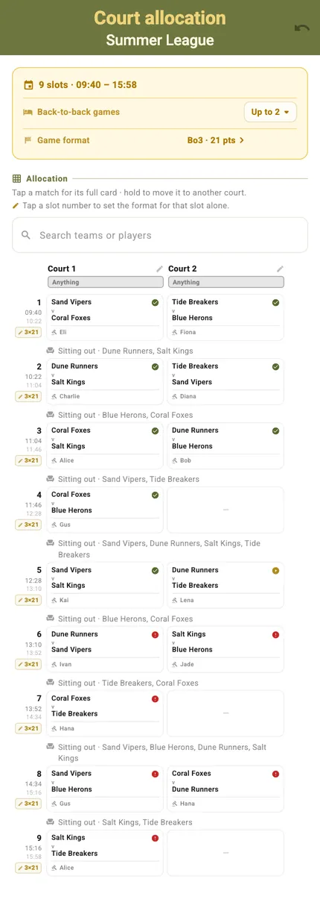
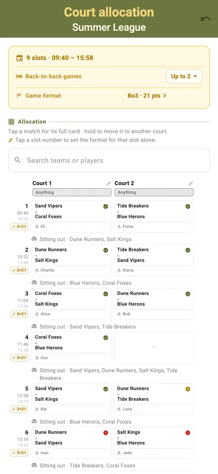
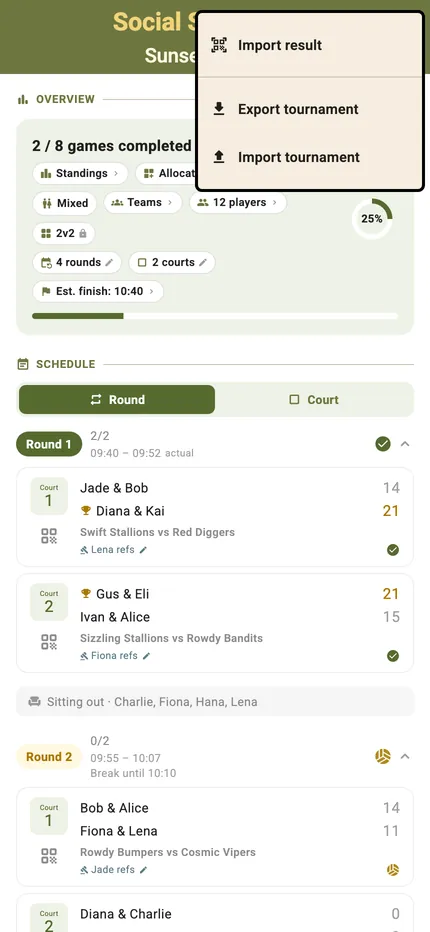
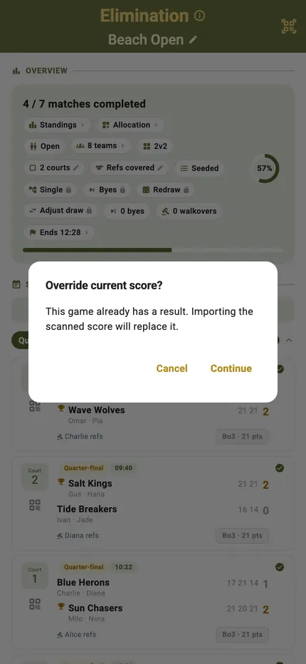
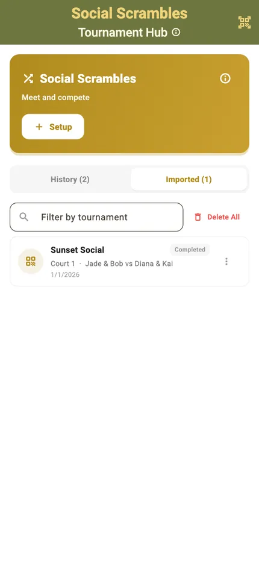

Tournament Management

Every tournament in TournaQ opens on the same screen: how far along you are, and a row of pills carrying every setting the event runs on — teams, players, courts, format, seeding, finish time.
Those pills are not labels. Each one opens the sheet that changes it, right up until play starts and the setting locks. This page is what sits behind each of them, and what happens to a tournament after the last match.
Best for
- Organisers setting an event up and adjusting it once it is running
- Anyone who has had to rebuild a schedule because one thing changed
- Clubs running the same event repeatedly
The settings row
The pills across the top of a tournament are the controls. A pencil means it can still be changed; a padlock means play has started and it cannot.
Teams
Who is in the event, and which players make up each team. Add a team, drop one, or fix a name that was typed wrong at registration.

Seeding
The order teams enter the draw, which decides who meets whom and how late the strongest teams collide. Seed by hand or leave it as entered.

Courts
How many courts the event has to play with. Change it mid-event and the schedule redistributes rather than breaking.

Game format
Points target, sets, and the shape of a match. Set once for the event so every scorecard opens with the right rules.

Schedule preview
The fixture list the current settings would produce, before anyone plays. If it does not fit the day, change the courts or the match length and look again.

Why a pill locks
Once results exist, changing the team count or the format would invalidate them. TournaQ says so rather than silently corrupting a half-played event.

Courts and allocation
Multi-court events live or die on who is where. TournaQ assigns the courts and shows you the whole plan on one screen.
The allocation grid
Every round against every court, so the shape of the day is visible at a glance — including the team that has been given the far court three times running.

Name and manage courts
Courts can be named and taken in or out of use, which matters when one has the sun in your eyes or the club wants it back at four.

Match details
Tap any match for its teams, court, time slot and referee — and to reassign any of them without leaving the screen.

Getting results in
Not every match is scored live on the phone that owns the tournament. Both of the other routes are supported rather than tolerated.

Enter a result directly
Type the final score into the match card and the standings, brackets and tables update exactly as if the scorecard had been used. This is how a tournament survives a court that ran ahead while you were refereeing another.

Or take one from another phone
A scorecard scored on a second device arrives marked as imported, so an event run across several phones can be folded back into one without anyone retyping scores.
Off the phone and back again
A tournament lives on the device that runs it, and nothing needs a signal. There are two ways out: a spreadsheet for the whole event, or a QR code for one match.
The whole event, as a spreadsheet
Export writes a real .xlsx — schedule, teams and results, one row per match. Watch the event from a laptop, fill in scores away from the phone, then import the file back. TournaQ reports what it recorded, replaced and skipped rather than applying it silently.

One match, by QR
Every match card carries a QR button. Show the code on one phone, scan it on another, and the scorecard travels between them — no reception, no account, nothing uploaded.

Importing over existing results
When an import would replace results already recorded, TournaQ shows what is about to change and asks first.

Running it again
The event you run every month should not need rebuilding every month.

Copy a tournament
Duplicate a finished event and you get its settings, courts and format as a fresh one, ready for a new set of teams. The monthly open takes a minute instead of a rebuild.

Imported scorecards, kept apart
Results that arrived from other devices sit on their own tab in the hub, next to your own history, so it stays obvious which were scored here and which were not.
Every tournament management feature
What is live today and what is on the way, per format. The full grid is on the Platform Features Hub.
-
Available
Tournament creation & setup
Define the event name, date, venue, number of courts, and participant list before play begins.
-
Available
Match scheduling
Assign matches to courts and time slots. Handle court changes and late adjustments without manual recalculation.
-
Available
Pace alerts
Every scorecard tracks the scheduled time slot for its match, so players keep an overview of where they stand against the clock and stay on schedule.
-
Available
Injury & withdrawal handling
Mark teams as withdrawn mid-tournament and automatically adjust brackets and standings without corrupting results already recorded.
-
Available
Singleplayer Competitions
Individual Player scramble and randomization. Compete for points per player
-
Available
Share Scorecards and Results via QR Code
Generate QR Codes to share Scorecards and Results even when offline.
-
Available
Multi-court parallel tracking
Run multiple simultaneous matches across courts within a single event, with results feeding into shared standings.
-
Available
Team Competitions
Compete focus on Partner Play and Team Standings
-
Available
Inline Tournament Editing
Adjust Tournament parameters during the ongoing event.
Have a question about running a tournament in TournaQ, or something you need that is not here yet?